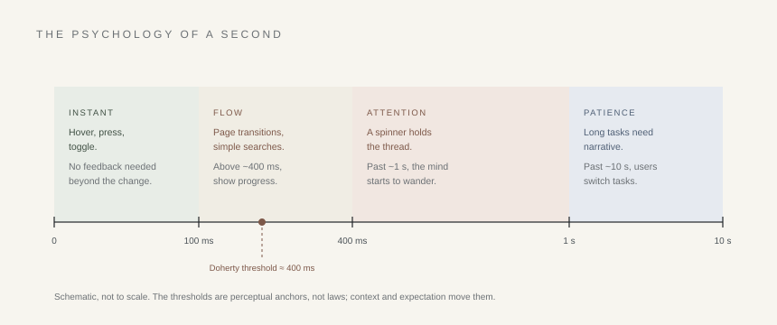

Chapter 05第五章
Motion as Meaning运动即意义
Motion is the visual system's loudest signal. It can explain, delight, nauseate, or distract—sometimes in the same second. This chapter is about timing, attention, and the ethics of animation. 运动是视觉系统最响亮的信号。它可以在同一秒里解释、取悦、令人眩晕，或者分散注意。本章讨论时机、注意，以及动画的伦理。
Motion is not decoration layered on top of meaning; it is meaning, carried by timing. A panel that slides from the right says “this came from the right.” A spinner that appears after 300 milliseconds says “we are working.” A page that will not stop moving says “your comfort is optional.” Choose what your motion says. 运动不是叠在意义之上的装饰；它本身就是意义，由时间承载。从右侧滑出的面板在说“它来自右边”；300 毫秒后出现的加载指示器在说“我们正在处理”；一个停不下来的页面在说“你的舒适是可选项”。请选择你的运动要说什么。
Why motion captures us我们为什么被运动吸引
Motion onset is one of the strongest attentional cues available. The visual system is especially sensitive to movement in the periphery, where acuity is poor but change detection is fast. A small movement at the edge of a screen can pull the eye away from the center of a task. 运动起始是最强的注意线索之一。视觉系统对周边视野中的运动尤其敏感——那里锐度很差，但变化检测很快。屏幕边缘的一次微小运动，就能把视线从任务中心拉走。
The evolutionary logic is easy to state: things that move may be food, predators, or opportunities. The cost of missing them was high. The result is a channel that is difficult to ignore, which is exactly why it is valuable to designers and dangerous to users. 演化逻辑很容易说明：会动的东西可能是食物、捕食者，也可能是机会。漏掉它们的代价很高。结果就是一条难以忽视的通道——这正是它对设计师有价值、对用户有风险的原因。
Motion also carries social information. Biological motion—the gait of a person, the blink of an eye—is detected quickly and interpreted richly. A loading animation that mimics a human rhythm can feel patient; one that stutters can feel broken. 运动还承载社会信息。生物运动——一个人的步态、一次眨眼——会被快速检测并丰富解读。模仿人类节奏的加载动画会显得从容；卡顿的动画则会显得坏掉了。
The grammar of interface motion界面运动的语法
Interface motion has four parameters: duration, easing, direction, and choreography. Duration sets pace; easing sets weight; direction sets origin; choreography sets causality. A menu that fades in has no origin. A menu that scales from the button that opened it has one. 界面运动有四个参数：时长、缓动、方向与编排。时长决定节奏；缓动决定重量感；方向决定来源；编排决定因果。淡入的菜单没有来源；从打开它的按钮处缩放展开的菜单则有。
Most interface transitions work best between roughly 100 and 300 milliseconds. Entering elements often use ease-out, arriving quickly and settling gently. Exiting elements often use ease-in, leaving without lingering. Longer durations can feel luxurious in a brand film and sluggish in a tool. 大多数界面转场在约 100 至 300 毫秒之间效果最好。进入元素常用 ease-out，快速到达、轻柔落定；退出元素常用 ease-in，干脆离开、不做停留。更长的时长在品牌片里可能显得高级，在工具里则会显得拖沓。
Continuity is the point. If an object appears to be the same object across states, motion preserves identity and reduces cognitive work. If everything moves independently, the user has to rebuild the scene after every transition. 关键在于连续性。如果一个物体在不同状态间看起来仍是同一个物体，运动就保持了同一性，减少了认知负担。如果所有东西都各自乱动，用户就得在每次转场后重建整个场景。
Timing and perceived performance时机与感知性能
Jakob Nielsen's three response-time limits remain a useful anchor: about 0.1 second feels instantaneous, about 1 second keeps the flow of thought intact, and about 10 seconds is the limit before attention wanders. The Doherty threshold, around 400 milliseconds, is often cited as the point above which feedback should appear. 雅各布·尼尔森提出的三条响应时间界限，至今仍是有用的锚点：约 0.1 秒感觉是瞬时的；约 1 秒能保持思维流不中断；约 10 秒是注意开始游走的极限。多赫蒂阈值约为 400 毫秒，常被引用为“超过就应给出反馈”的临界点。
Perceived speed is not the same as actual speed. A progress bar that moves smoothly can make a 3-second wait feel shorter than a 2-second wait with no feedback. Skeletons, optimistic updates, and staged reveals all trade a little accuracy for a lot of patience. 感知速度并不等于实际速度。一条平滑推进的进度条，能让 3 秒的等待感觉比 2 秒的无反馈等待更短。骨架屏、乐观更新与分阶段呈现，都是用一点准确性换取大量耐心。
The ethics arrive here too. A fake progress bar that jumps to 90% and stops is not a performance optimization; it is a small deception. Motion that disguises lag can be kind, but motion that fabricates progress is not. 伦理问题也在这里出现。一条跳到 90% 就停住的假进度条，不是性能优化，而是一种小小的欺骗。用运动掩盖卡顿可以是善意的；用运动伪造进度则不是。

When motion harms运动何时造成伤害
For people with vestibular disorders, migraine, or certain neurological conditions, large-scale motion can cause dizziness, nausea, and disorientation. Parallax scrolling, zoom transitions, and full-screen video are common triggers. The effect is not a matter of taste or tolerance; it is a bodily response. 对于前庭功能障碍、偏头痛或某些神经系统疾病的人来说，大尺度运动可能引发眩晕、恶心与定向障碍。视差滚动、缩放转场与全屏视频都是常见诱因。这不是品味或忍耐力的问题，而是身体反应。
Flashing is a separate hazard. Content that flashes more than three times per second can trigger seizures in susceptible people. WCAG's three-flashes threshold is a safety floor, not a style guideline. 闪烁是另一种风险。每秒闪烁超过三次的内容，可能在易感人群中诱发癫痫。WCAG 的“三次闪烁”阈值是安全下限，而不是风格建议。
The practical remedy is prefers-reduced-motion: respect the operating-system setting, and offer an in-product control. Reduced motion does not mean no feedback; it means substituting opacity, color, or instant state changes for large movement.
实用的补救措施是 prefers-reduced-motion：尊重操作系统设置，并在产品内提供控制项。减少运动不等于没有反馈；它的意思是用透明度、颜色或即时状态变化，替代大尺度位移。
A motion budget运动预算
Treat motion like a budget. Every animation must earn its milliseconds by doing one of four jobs: orienting the user in space, confirming an action, explaining a causal relationship, or providing deliberate delight. If it does none of these, it is noise with a frame rate. 把运动当作预算来管理。每一个动画都必须用它的毫秒数完成四项工作之一：帮助用户定位空间、确认一次操作、解释因果关系，或提供有节制的愉悦。如果一项都不做，它就是有帧率的噪声。
Then test the budget under constraints: reduced motion, low-end devices, slow networks, and divided attention. Motion that only works on a fast laptop in a quiet room is not a design; it is a demo. 然后在约束条件下测试这份预算：减少运动、低端设备、慢网络、被分散的注意。只在安静房间里的高性能笔记本上成立的运动，不是设计，而是演示。
Apparent motion was studied systematically by Wertheimer (1912), whose phi phenomenon showed that the perception of movement can be created from stationary flashes. The response-time limits come from decades of human–computer interaction work and are best treated as design heuristics. The vestibular risk of large motion is well documented in clinical and accessibility literature, and WCAG 2.3.3 provides a testable standard for interaction-triggered animation. 韦特海默（1912）系统研究了似动现象，他的 phi 现象表明，运动知觉可以由静止的闪光制造出来。响应时间界限来自数十年的人机交互研究，最好被视为设计启发式。大尺度运动带来的前庭风险在临床与可访问性文献中有充分记录，WCAG 2.3.3 则为由交互触发的动画提供了可测试的标准。
Turn on “reduce motion” in your operating system, then use a site you know well for five minutes. Note what breaks, what improves, and what disappears. The disappearing parts were probably decoration; the broken parts were probably depending on motion to communicate. 在操作系统中开启“减少运动”，然后使用一个你熟悉的网站五分钟。记下什么坏掉了、什么变好了、什么消失了。消失的部分多半是装饰；坏掉的部分，多半是在依赖运动来传达信息。
- Motion is attention capture first, decoration second.运动首先是注意捕获，其次才是装饰。
- Duration and easing communicate weight and causality.时长与缓动传达重量感与因果关系。
- Perceived performance is real performance to the person waiting.对等待中的人来说，感知性能就是真实性能。
- Respect vestibular safety; reduced motion is a requirement, not a nicety.尊重前庭安全；减少运动是要求，不是点缀。
- Wertheimer, M. (1912). Experimentelle Studien über das Sehen von Bewegung. Zeitschrift für Psychologie, 61, 161–265.
- Nielsen, J. (1993). Usability Engineering. Academic Press.
- Doherty, W. J., & Thadani, A. J. (1982). The economic value of rapid response time. IBM.
- W3C (2023). WCAG 2.2, Success Criterion 2.3.3: Animation from Interactions.
- Google (2021). Material Design: Motion.
- Johansson, G. (1973). Visual perception of biological motion and a model for its analysis. Perception & Psychophysics, 14(2), 201–211.